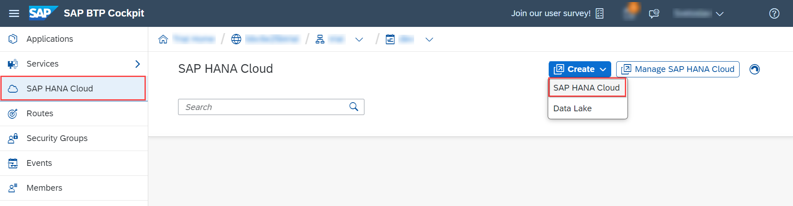
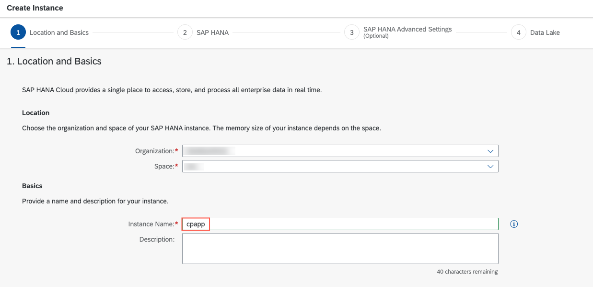
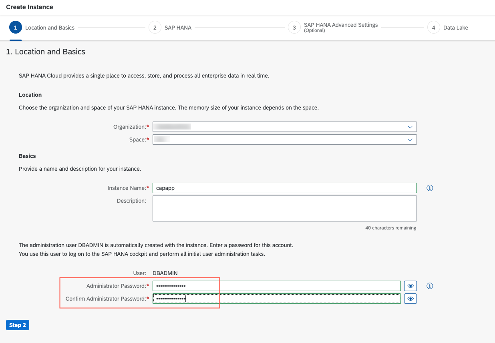
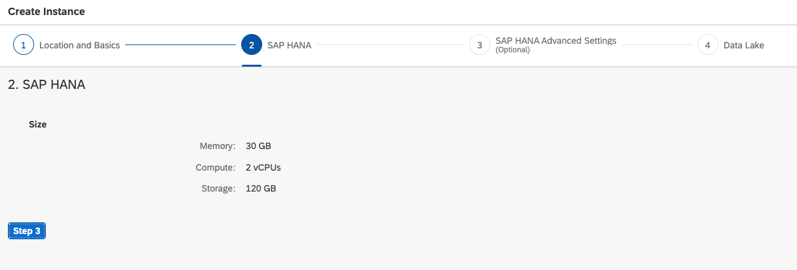
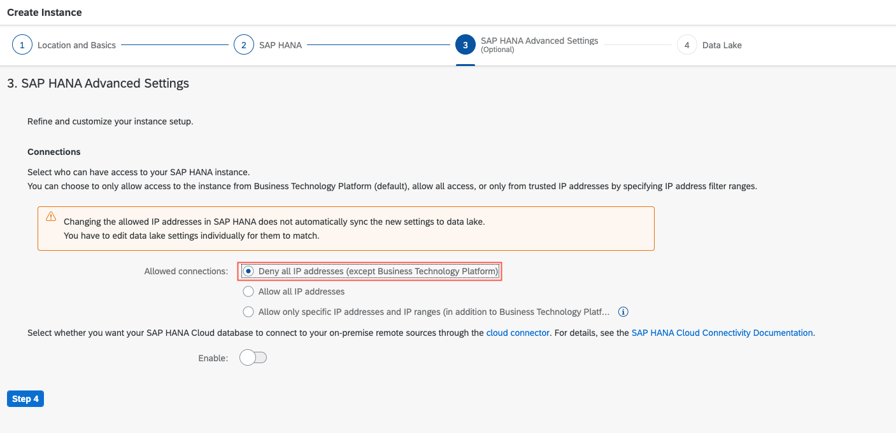
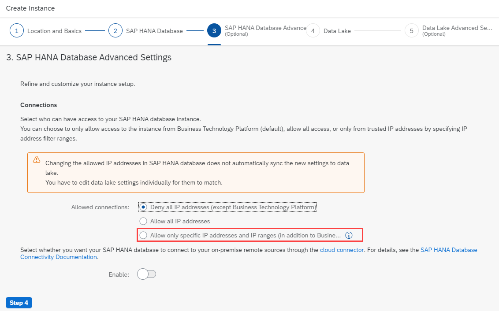

Set Up the SAP HANA Cloud Service
Prerequisites
Add SAP HANA Client to Project
The SAP HANA hdb npm module needs to be added to our package in order to support SAP HANA.
npm install hdb --save
The CAP application will still use SQLite in-memory database for local testing, while the SAP HANA database should be used "productively" in the cloud.
Switch to hdbtable Deployment
By default, the deployment uses the hdbcds as deployment format. However, this isn’t supported for SAP HANA Cloud and the configuration needs to be changed to use the hdbtable and hdbview format.
-
Add the following snippet at the end of your
package.json:{ "name": "cpapp", ... "cds": { "requires": { "db": { "kind": "sql" } }, "hana": { "deploy-format": "hdbtable" } } }See also:
-
Run
cds watchand check that your app still works locally as it used to work before at http://localhost:4004/.
There are three options to continue:
Option 1: You already have an SAP HANA Cloud service instance in your Cloud Foundry space → You're set. Nothing to do.
Option 2: You want to use an SAP HANA Cloud service instance from a different Cloud Foundry org or space, but in the same landscape → continue with Option 2: Use an existing SAP HANA Cloud Service Instance.
Option 3: You want to create a new SAP HANA Cloud service instance → continue with Option 3: Create an SAP HANA Cloud Service Instance.
SAP HANA Cloud Documentation
Please read the documentation for further information:
Option 2: Use an Existing SAP HANA Cloud Service Instance
-
Go to your SAP BTP cockpit by using one of the following links, depending on the landscape you want to deploy to:
-
Choose the Global Account.
- Navigate to the Subaccount.
- Choose Cloud Foundry → Spaces in the left-hand pane.
- Choose the space where you already have the SAP HANA Cloud service instance.
- Choose SAP HANA Cloud in the left-hand pane.
- Choose Manage SAP HANA Cloud in the upper right corner.
-
Sign in with your SAP BTP Cockpit username/email.
The SAP HANA Cloud Central cockpit opens.
-
Choose an organization and again choose the space where you have the SAP HANA Cloud service instance.

-
Choose your service instance.
- Choose Create Mapping.
- Choose the Org ID and Space ID where you want to deploy the application.
- Choose Add.
Option 3: Create an SAP HANA Cloud Service Instance
Additional Documentation
-
Go to your SAP BTP cockpit by using one of the following links, depending on the landscape you want to deploy to:
-
Choose your Global Account.
- Navigate to your Subaccount.
- Choose Cloud Foundry → Spaces in the left-hand pane.
- Choose the Space that you want to deploy to.
-
Choose SAP HANA Cloud in the left-hand pane.

-
Choose Create → SAP HANA Cloud.
- Sign in with your SAP BTP Cockpit username/email.
- The Organization and Space will be selected.
-
Enter the Instance Name:
cpapp.
-
Enter a password for DBADMIN in Administrator Password and Confirm Administrator Password.

-
Choose Step 2.
-
The default settings should be sufficient for the tutorial application.

-
Choose Step 3.
-
Choose
Deny all IP addresses (except Business Technology Platform).
SAP
While
Deny all IP addresses (except Business Technology Platform)should be chosen for productive use, local access can be helpful for development scenarios. Therefore, you can add the CIDR codes for your SAP offices. See section Public Office Network IP Addresses for more details.
-
Choose Step 4.
Don't create a data lake. It's really useful for storing and analyzing high volumes of infrequently updated data, but we don't need it for this tutorial.
-
Choose Step 5
This step includes advanced data lake settings that are only relevant if you've created a data lake at step 4. You can skip this if you haven't created a data lake.
-
Choose Create Instance.
The creation of the database instance can take some minutes to complete. The final result looks like this in SAP BTP cockpit:

SAP HANA Cloud instances are automatically stopped overnight for SAP BTP trial.
Your SAP HANA Cloud instance will be automatically stopped overnight, according to the server region time zone. That means you need to restart your instance every day, before you start working with your trial.